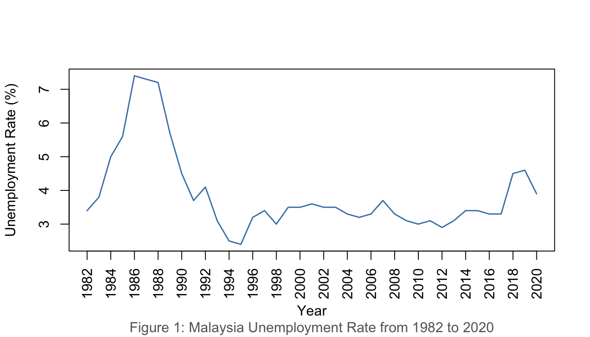
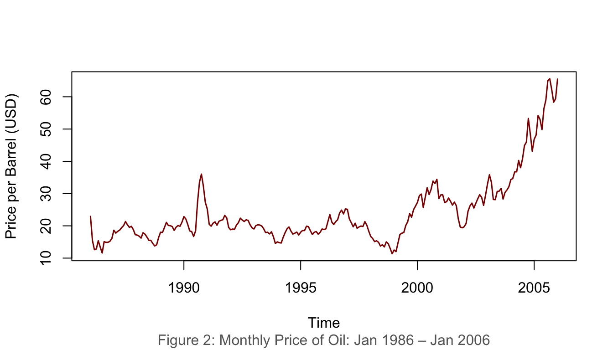
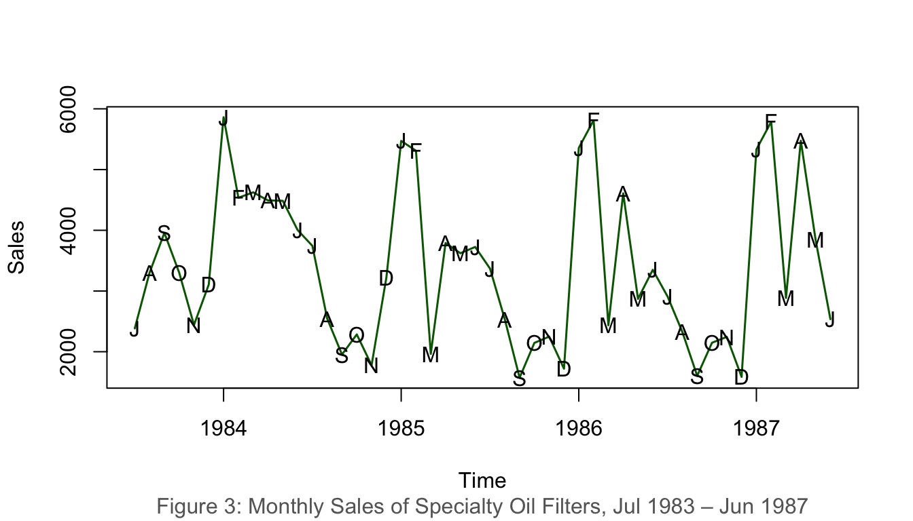
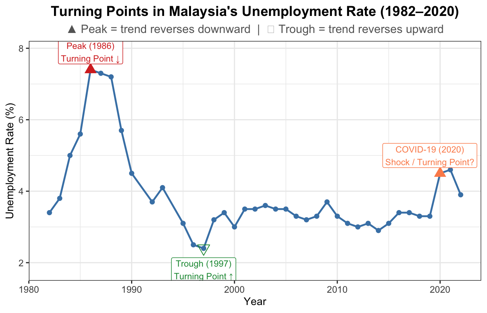
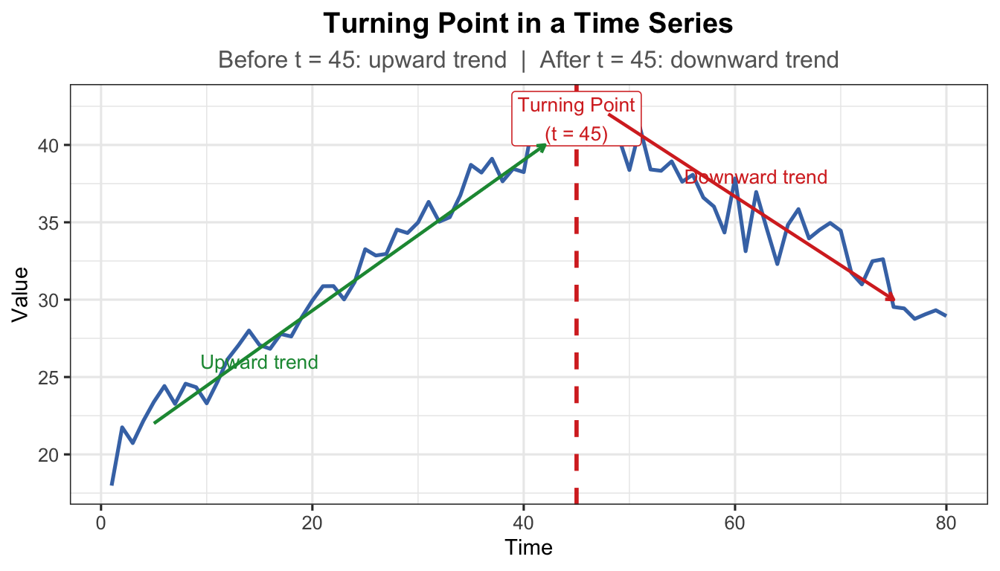
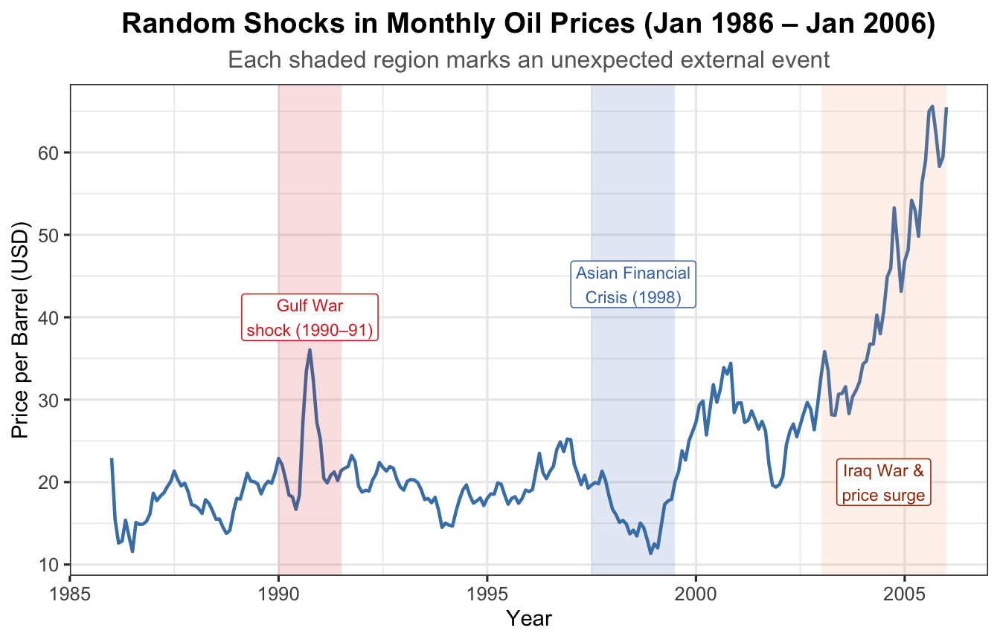
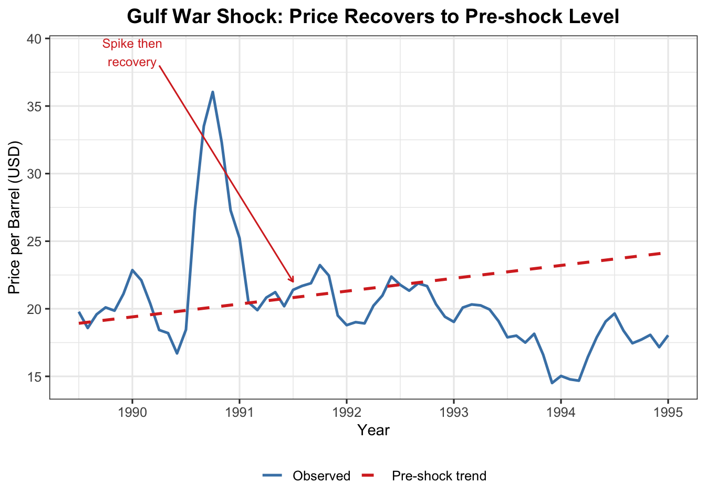
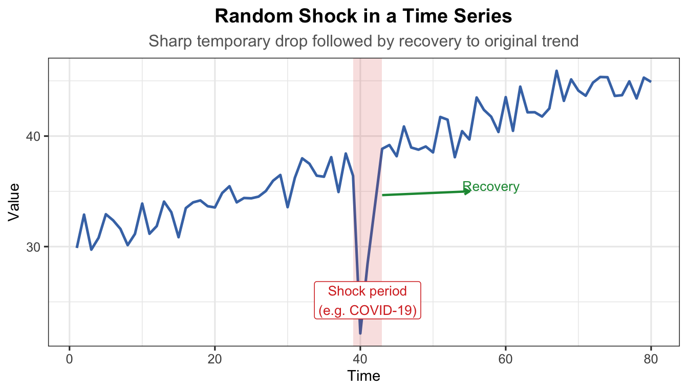
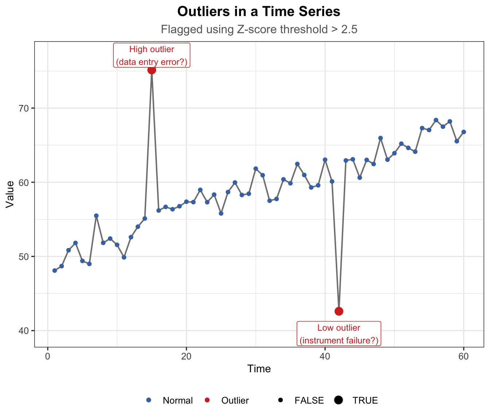

By the end of this chapter, students should be able to:
Understand Time Series Fundamentals.
Identify Time Series Components.
Understand the Relationship Among Components.
Measure Forecast Performance.
Apply these concepts using R.
1.2 Definition
A time series is fundamentally defined as a time-oriented or chronological sequence of observations measured on a variable of interest. These observations are typically collected sequentially over time at fixed, equally spaced intervals, referred to as the sampling interval.
Depending on the context, time series data can take several forms:
Instantaneous measurements: A reading taken at a specific point in time, such as the viscosity of a chemical product at the moment it is measured.
Cumulative quantities: An accumulated total over the interval, such as the total product demand or sales during a month.
Summary statistics: A metric that reflects activity of the variable during the time period, such as the daily closing price of a stock.
1.2.1 Statistical and Mathematical Definition
A time series is modelled as a discrete-time stochastic process — a collection of random variables indexed according to the discrete time order in which they are obtained.
A time series of length \(n\) is represented as:
\[\{y_t : t = 1, 2, \ldots, n\}\]
where the subscript \(t\) denotes the discrete time period.
An important distinction:
Concept
Description
The Time Series Model
The theoretical sequence of underlying random variables — the ensemble of possibilities
The Realization
The actual historical sequence of data observed; a single realization of the stochastic process
A time series can be visualized via a time series plot.
1.4.1 Example 1: Malaysia Unemployment Rate (1982–2020)
Show R Code
unrate <-read.csv("data/employment.csv")unratets <-ts(unrate$u_rate, start =1982)plot(unratets,ylab ="Unemployment Rate (%)", xlab ="Year", xaxt ="n",col ="steelblue", lwd =1.5)years <-seq(1982, 2020, by =2)axis(1, at = years, labels = years, las =2)title(sub ="Figure 1: Malaysia Unemployment Rate from 1982 to 2020",col.sub ="grey40")

Figure 1: Malaysia Unemployment Rate, 1982–2020
1.4.2 Example 2: Monthly Oil Price (Jan 1986 – Jan 2006)
Show R Code
data(oil.price)plot(oil.price, ylab ="Price per Barrel (USD)", type ="l",col ="darkred", lwd =1.5)title(sub ="Figure 2: Monthly Price of Oil: Jan 1986 – Jan 2006",col.sub ="grey40")

Figure 2: Monthly price of oil, January 1986 – January 2006
1.4.3 Example 3: Monthly Sales of Specialty Oil Filters (1983–1987)
Show R Code
data(oilfilters)plot(oilfilters, type ="l", ylab ="Sales", col ="darkgreen", lwd =1.5)points(y = oilfilters, x =time(oilfilters),pch =as.vector(season(oilfilters)))title(sub ="Figure 3: Monthly Sales of Specialty Oil Filters, Jul 1983 – Jun 1987",col.sub ="grey40")

Figure 3: Monthly sales of specialty oil filters, 1983–1987
1.5 Interpretation of Time Series Plot
When interpreting a time series plot, always include the following:
Element
Description
Minimum
The smallest value in the plot
Maximum
The largest value in the plot
Outliers
Values much further away from the rest of the data points
Trends
Patterns such as upward/downward movements or clusters
Example interpretation (Figure 1):Malaysia’s unemployment rate ranged from a minimum of 2.4% (1997) to a maximum of 7.4% (2020). The data shows a general downward trend from 1986 to 1997 and exhibits considerable fluctuation thereafter, with a sharp spike in 2020 likely attributed to the COVID-19 pandemic.
2 Components of Time Series
A time series is typically composed of four components:
Component
Notation
Description
Trend
\(T_t\)
Long-run direction of the series
Seasonal
\(S_t\)
Regular, repeating fluctuations within a fixed period
Cyclical
\(C_t\)
Long-wave rises and falls around the trend
Irregular/Random
\(I_t\)
Unpredictable, residual variation
2.1 Trend
The trend component describes the general upward or downward movements that characterise all economic and business activities.
2.1.1 Types of Trends
Type
Description
Upward
Values increase over time
Downward
Values decrease over time
No Trend/Flat
Values remain relatively stable
Non-linear
Exhibits curvature — exponential growth, logarithmic decay, etc.
The irregular or random component is the portion that cannot be explained by trend, seasonal, or cyclical components. It has four distinct sub-types:
Sub-type
Key Characteristic
Visual Pattern
Turning Point
Trend permanently changes direction
Sustained shift in slope
Random Shock
Sudden, temporary spike or dip
Sharp impulse, then recovery
Outlier
One extreme isolated value
Single point far from neighbours
Pure Noise
Small unpredictable fluctuations
Irregular scatter around zero
2.4.1 Turning Point
A turning point is where the long-run direction permanently reverses — from upward to downward or vice versa. Unlike a shock, the series does not recover to its prior direction.
Examples:
Introduction of robotic manufacturing permanently raises production.
Sudden change in consumer preference shifts demand to a new sustained level.
Policy change (e.g., new minimum wage legislation) permanently alters labour market dynamics.
Show R Code
unrate <-read.csv("data/employment.csv")df_u <-data.frame(Year =as.numeric(format(as.Date(unrate$date), "%Y")),u_rate = unrate$u_rate)ggplot(df_u, aes(x = Year, y = u_rate)) +geom_line(colour ="steelblue", linewidth =0.9) +geom_point(size =1.8, colour ="steelblue") +geom_point(data = df_u[df_u$Year ==1986, ],aes(x = Year, y = u_rate),colour ="#d73027", size =4, shape =17) +annotate("label", x =1986, y = df_u$u_rate[df_u$Year ==1986] +0.5,label ="Peak (1986)\nTurning Point ↓",colour ="#d73027", fill ="white", size =3.2, label.size =0.3) +geom_point(data = df_u[df_u$Year ==1997, ],aes(x = Year, y = u_rate),colour ="#1a9641", size =4, shape =25) +annotate("label", x =1997, y = df_u$u_rate[df_u$Year ==1997] -0.6,label ="Trough (1997)\nTurning Point ↑",colour ="#1a9641", fill ="white", size =3.2, label.size =0.3) +geom_point(data = df_u[df_u$Year ==2020, ],aes(x = Year, y = u_rate),colour ="#fc8d59", size =4, shape =17) +annotate("label", x =2019, y = df_u$u_rate[df_u$Year ==2020] +0.5,label ="COVID-19 (2020)\nShock / Turning Point?",colour ="#fc8d59", fill ="white", size =3.2, label.size =0.3) +labs(title ="Turning Points in Malaysia's Unemployment Rate (1982–2020)",subtitle ="▲ Peak = trend reverses downward | ▽ Trough = trend reverses upward",x ="Year", y ="Unemployment Rate (%)") +theme_ts()

Figure 9: Turning points in Malaysia’s unemployment rate (1982–2020)
Show R Code
t_tp <-1:80# Before turning point: upward; after: downwardy_tp <-ifelse(t_tp <=45,20+0.5* t_tp,20+0.5*45-0.4* (t_tp -45)) +rnorm(80, 0, 1.2)df_tp <-data.frame(t = t_tp, y = y_tp)ggplot(df_tp, aes(x = t, y = y)) +geom_line(colour ="#4575b4", linewidth =0.9) +geom_vline(xintercept =45, linetype ="dashed", colour ="#d73027",linewidth =1) +annotate("label", x =45, y =max(y_tp) -1,label ="Turning Point\n(t = 45)", colour ="#d73027",fill ="white", size =3.5, label.size =0.3) +annotate("segment", x =5, xend =42, y =22, yend =40,arrow =arrow(length =unit(0.15, "cm")),colour ="#1a9641", linewidth =0.8) +annotate("text", x =15, y =26, label ="Upward trend",colour ="#1a9641", size =3.5) +annotate("segment", x =48, xend =75, y =42, yend =30,arrow =arrow(length =unit(0.15, "cm")),colour ="#d73027", linewidth =0.8) +annotate("text", x =62, y =38, label ="Downward trend",colour ="#d73027", size =3.5) +labs(title ="Turning Point in a Time Series",subtitle ="Before t = 45: upward trend | After t = 45: downward trend",x ="Time", y ="Value") +theme_ts()

Figure 10: Turning point — the trend permanently reverses direction at the marked point
Note
Turning point vs. Random Shock: A turning point results in a permanent direction change. After a random shock, the series recovers toward its previous level.
2.4.2 Random Shock
A random shock is an abrupt, temporary spike or drop caused by an unexpected external event. The series typically recovers toward its prior level once the event passes.
Examples:
Crude oil price sudden drop due to COVID-19.
Production of masks increasing tremendously during the pandemic.
Stock market crash following a geopolitical crisis or natural disaster.
Show R Code
data(oil.price)oil_df <-data.frame(Date =as.numeric(time(oil.price)),Price =as.numeric(oil.price))ggplot(oil_df, aes(x = Date, y = Price)) +geom_line(colour ="steelblue", linewidth =0.8) +annotate("rect", xmin =1990, xmax =1991.5,ymin =-Inf, ymax =Inf, alpha =0.15, fill ="#d73027") +annotate("label", x =1990.75, y =40,label ="Gulf War\nshock (1990–91)",colour ="#d73027", fill ="white", size =3, label.size =0.3) +annotate("rect", xmin =1997.5, xmax =1999.5,ymin =-Inf, ymax =Inf, alpha =0.15, fill ="#4575b4") +annotate("label", x =1998.5, y =44,label ="Asian Financial\nCrisis (1998)",colour ="#4575b4", fill ="white", size =3, label.size =0.3) +annotate("rect", xmin =2003, xmax =2006,ymin =-Inf, ymax =Inf, alpha =0.12, fill ="#fc8d59") +annotate("label", x =2004.5, y =20,label ="Iraq War &\nprice surge",colour ="#a63603", fill ="white", size =3, label.size =0.3) +labs(title ="Random Shocks in Monthly Oil Prices (Jan 1986 – Jan 2006)",subtitle ="Each shaded region marks an unexpected external event",x ="Year", y ="Price per Barrel (USD)") +theme_ts()

Figure 11: Random shocks in monthly oil prices (Jan 1986 – Jan 2006)
Show R Code
oil_sub <- oil_df[oil_df$Date >=1989.5& oil_df$Date <=1995, ]lm_pre <-lm(Price ~ Date, data = oil_df[oil_df$Date <1990, ])oil_sub$trend <-predict(lm_pre, newdata =data.frame(Date = oil_sub$Date))ggplot(oil_sub, aes(x = Date)) +geom_line(aes(y = Price, colour ="Observed"), linewidth =0.9) +geom_line(aes(y = trend, colour ="Pre-shock trend"),linetype ="dashed", linewidth =1) +annotate("segment", x =1990.25, xend =1991.5, y =38, yend =22,arrow =arrow(length =unit(0.15, "cm")), colour ="#d73027") +annotate("text", x =1990, y =39, label ="Spike then\nrecovery",colour ="#d73027", size =3.2) +scale_colour_manual(values =c("Observed"="steelblue","Pre-shock trend"="#d73027")) +labs(title ="Gulf War Shock: Price Recovers to Pre-shock Level",x ="Year", y ="Price per Barrel (USD)", colour =NULL) +theme_ts()

Figure 12: Gulf War shock (1990–91): price spikes then recovers to prior trend
Show R Code
t_sh <-1:80trend_sh <-30+0.2* t_shnoise_sh <-rnorm(80, 0, 1.2)shock <-rep(0, 80)shock[40] <--18# sudden sharp downward shockshock[41] <--10shock[42] <--4# gradual recoveryy_sh <- trend_sh + shock + noise_shdf_sh <-data.frame(t = t_sh, y = y_sh)ggplot(df_sh, aes(x = t, y = y)) +geom_line(colour ="#4575b4", linewidth =0.9) +annotate("rect", xmin =39, xmax =43, ymin =-Inf, ymax =Inf,alpha =0.15, fill ="#d73027") +annotate("label", x =41, y =min(y_sh) +3,label ="Shock period\n(e.g. COVID-19)", colour ="#d73027",fill ="white", size =3.5, label.size =0.3) +annotate("segment", x =43, xend =55, y = y_sh[42] +1, yend =35,arrow =arrow(length =unit(0.15, "cm")), colour ="#1a9641",linewidth =0.8) +annotate("text", x =58, y =35.5, label ="Recovery",colour ="#1a9641", size =3.5) +labs(title ="Random Shock in a Time Series",subtitle ="Sharp temporary drop followed by recovery to original trend",x ="Time", y ="Value") +theme_ts()

Figure 13: Random shock — a sudden spike followed by recovery to the previous level
Show R Code
t2 <-1:60base <-20+0.15* t2# Single-period impulsey_imp <- base +rnorm(60, 0, 0.8)y_imp[30] <- y_imp[30] +12# Multi-period sustained shock (e.g. supply chain disruption for 5 months)shock_sus <-rep(0, 60)shock_sus[30:34] <-c(8, 10, 9, 7, 4)y_sus <- base + shock_sus +rnorm(60, 0, 0.8)df_imp <-data.frame(t = t2, y = y_imp, type ="Single-period Impulse")df_sus <-data.frame(t = t2, y = y_sus, type ="Sustained Shock (5 periods)")df_cmp <-rbind(df_imp, df_sus)ggplot(df_cmp, aes(x = t, y = y)) +geom_line(colour ="#4575b4", linewidth =0.8) +facet_wrap(~type, scales ="free_y") +labs(title ="Types of Random Shock",x ="Time", y ="Value") +theme_ts()
An outlier is an isolated data point that significantly deviates from the overall pattern. Unlike a random shock (which spans several periods), an outlier is typically a single observation.
Outliers arise from: errors in data collection, measurement instrument failure, or genuinely unusual one-off events.
Show R Code
t_out <-1:60y_out <-50+0.3* t_out +rnorm(60, 0, 2)# Inject outliersy_out[15] <- y_out[15] +20# high outliery_out[42] <- y_out[42] -18# low outlier# Z-score to flag outliersz_scores <-abs(scale(y_out))is_outlier <- z_scores >2.5df_out <-data.frame(t = t_out, y = y_out, outlier =as.vector(is_outlier))ggplot(df_out, aes(x = t, y = y)) +geom_line(colour ="grey50", linewidth =0.7) +geom_point(aes(colour = outlier, size = outlier)) +scale_colour_manual(values =c("FALSE"="#4575b4", "TRUE"="#d73027"),labels =c("FALSE"="Normal", "TRUE"="Outlier")) +scale_size_manual(values =c("FALSE"=1.5, "TRUE"=3.5)) +annotate("label", x =15, y = y_out[15] +2,label ="High outlier\n(data entry error?)",colour ="#d73027", fill ="white", size =3.2, label.size =0.3) +annotate("label", x =42, y = y_out[42] -3,label ="Low outlier\n(instrument failure?)",colour ="#d73027", fill ="white", size =3.2, label.size =0.3) +labs(title ="Outliers in a Time Series",subtitle ="Flagged using Z-score threshold > 2.5",x ="Time", y ="Value", colour =NULL, size =NULL) +theme_ts()

Figure 15: Outliers in a time series — isolated extreme data points
How to detect outliers:
Visual inspection of the time series plot.
Z-score method — flag where \(|z_t| = |\frac{y_t - \bar{y}}{s}| > 2.5\).
Decomposition residuals — inspect the irregular component after removing trend and seasonal effects.
How to deal with outliers:
Strategy
When to Use
Remove
Confirmed data entry errors or instrument failures
Winsorize
Replace with boundary value (5th/95th percentile)
Impute
Replace with average of neighbours
Robust models
Use outlier-resistant forecasting techniques
2.4.4 Random (Pure Noise)
The random sub-component refers to small, unpredictable fluctuations that remain after all systematic effects are removed. Also called the residual or error term.
Random errors are expected to be \(I_t \sim N(0, \sigma^2)\) and uncorrelated across time.
Robust to outliers; in original units; easy to compute
Disadvantage
Treats all forecast errors equally regardless of magnitude
Note
The best model produces the lowest error measure value.
A truly good model gives consistently low values across multiple error measures.
4.3 Example: Malaysia CPI Data
4.3.1 Model 1 — Linear Trend
Show R Code
n <-length(cpits)n_train <-length(est_part) # derived from actual 80% splitn_test <- n - n_traintime_train <-1:n_traintime_test <- (n_train +1):nmodel1 <-lm(est_part ~ time_train)summary(model1)
Call:
lm(formula = est_part ~ time_train)
Residuals:
Min 1Q Median 3Q Max
-6.2836 -3.3028 -0.2493 2.3069 10.7824
Coefficients:
Estimate Std. Error t value Pr(>|t|)
(Intercept) 8.82882 1.11813 7.896 3.16e-10 ***
time_train 1.68883 0.03816 44.255 < 2e-16 ***
---
Signif. codes: 0 '***' 0.001 '**' 0.01 '*' 0.05 '.' 0.1 ' ' 1
Residual standard error: 3.894 on 48 degrees of freedom
Multiple R-squared: 0.9761, Adjusted R-squared: 0.9756
F-statistic: 1959 on 1 and 48 DF, p-value: < 2.2e-16